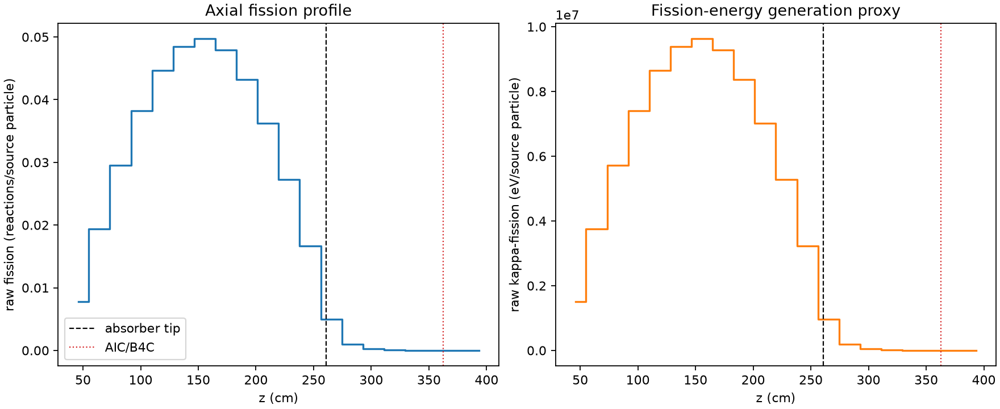
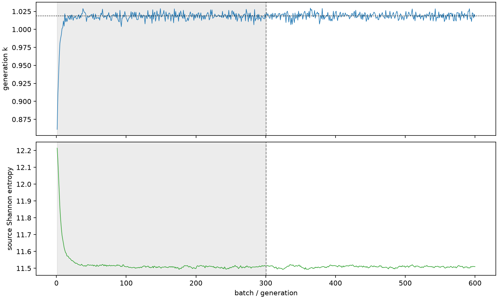

| field | value |
|---|---|
| experiment | V2-STAGE_128_OGRENCI_03-0004 |
| k | 1.0189805138243446 |
| MC standard error | 0.00016991255499000006 |
| seconds | 989.9249699150023 |
| acceptance | not_assessed |
| convergence | review_required |
Completed is output integrity only; physical and statistical review required. Zero tallies do not prove zero production or zero uncertainty.
| diagnostic | value |
|---|---|
| geometric fuel voxels | 5280 |
| zero fission tally voxels | 270 |
| low signal fuel voxels | 1104 |
| low signal fission share | 6.230979657547136e-05 |
| low signal kappa share | 6.234114855790672e-05 |
| important fission share | 0.9500040575227479 |
| previous filter included | 4176 |
| duration estimate s | 1562.5173488400023 |
| actual minus estimate s | -572.592378925 |
| fission relative MC error | statistics |
|---|---|
| all_geometric_fuel | {"voxels": 5280, "positive_mean_voxels": 5010, "zero_mean_voxels": 270, "undefined_relative_error_voxels": 270, "median": 0.010451767009632363, "p95": 0.8016764281419224, "maximum": 1.0000000000000002} |
| low_signal | {"voxels": 1104, "positive_mean_voxels": 834, "zero_mean_voxels": 270, "undefined_relative_error_voxels": 270, "median": 0.5529174812099797, "p95": 1.0, "maximum": 1.0000000000000002} |
| important_95pct | {"voxels": 2794, "positive_mean_voxels": 2794, "zero_mean_voxels": 0, "undefined_relative_error_voxels": 0, "median": 0.007460479208440583, "p95": 0.011123330442752771, "maximum": 0.013511021333368504} |
| outside_previous_filter | {"voxels": 1104, "positive_mean_voxels": 834, "zero_mean_voxels": 270, "undefined_relative_error_voxels": 270, "median": 0.5529174812099797, "p95": 1.0, "maximum": 1.0000000000000002} |
| kappa_fission relative MC error | statistics |
|---|---|
| all_geometric_fuel | {"voxels": 5280, "positive_mean_voxels": 5010, "zero_mean_voxels": 270, "undefined_relative_error_voxels": 270, "median": 0.010438098563257045, "p95": 0.8006608750289814, "maximum": 1.0000000000000002} |
| low_signal | {"voxels": 1104, "positive_mean_voxels": 834, "zero_mean_voxels": 270, "undefined_relative_error_voxels": 270, "median": 0.5523726220938243, "p95": 1.0, "maximum": 1.0000000000000002} |
| important_95pct | {"voxels": 2794, "positive_mean_voxels": 2794, "zero_mean_voxels": 0, "undefined_relative_error_voxels": 0, "median": 0.0074509039698373875, "p95": 0.01110806206296528, "maximum": 0.013490648637356183} |
| outside_previous_filter | {"voxels": 1104, "positive_mean_voxels": 834, "zero_mean_voxels": 270, "undefined_relative_error_voxels": 270, "median": 0.5523726220938243, "p95": 1.0, "maximum": 1.0000000000000002} |
| axial bin | fission share | kappa-fission share |
|---|---|---|
| 1 | 0.018652882363086713 | 0.01865403771601008 |
| 2 | 0.04670348004746384 | 0.046703468775236144 |
| 3 | 0.07119999284383771 | 0.07119966547411219 |
| 4 | 0.09200884577945231 | 0.09200828536671334 |
| 5 | 0.10757975992107814 | 0.10757928000512747 |
| 6 | 0.1167501004161813 | 0.11674968080453925 |
| 7 | 0.11964447721884529 | 0.11964382706253136 |
| 8 | 0.11528485927225285 | 0.11528393877238935 |
| 9 | 0.10404438557341113 | 0.10404367636886247 |
| 10 | 0.08727925279782583 | 0.0872786430331859 |
| 11 | 0.06567480939030884 | 0.06567436420253157 |
| 12 | 0.040103486883571675 | 0.04010312924562145 |
| 13 | 0.011967143298059507 | 0.011970010751725912 |
| 14 | 0.002384365058595591 | 0.002385457746026241 |
| 15 | 0.0005559974002427626 | 0.0005562880897798583 |
| 16 | 0.00012855864873245642 | 0.0001286211191639852 |
| 17 | 2.9503608576619097e-05 | 2.9522344806552115e-05 |
| 18 | 6.571424637608479e-06 | 6.575469518934812e-06 |
| 19 | 1.3457988367864783e-06 | 1.3455940685440649e-06 |
| 20 | 1.8225500294129617e-07 | 1.8205804973210823e-07 |
Histories include the inactive-to-active transition at batch 300. kappa-fission approximates fission energy production, not total heat deposition.

